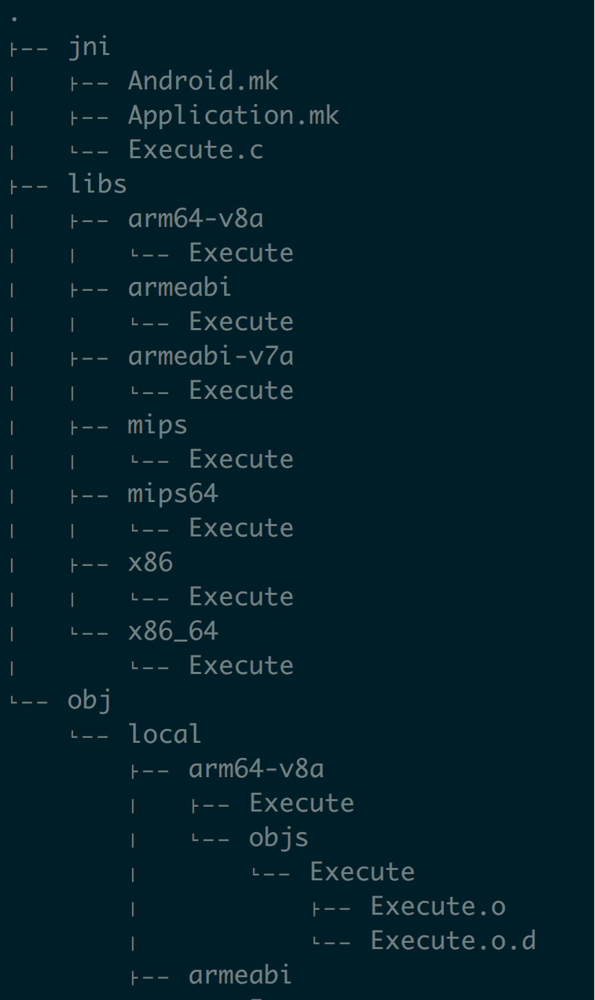

Android平台可执行二进制程序
目的
基于 Android 平台，用 C/C++ 编写可执行的二进制程序，可以用 adb shell 执行。
环境
MacOS + NDK + 原生模拟器
ps : 可以先把 NDK 配置到环境变量里面
步骤
新建目录
1mkdir -p hello/jni进入 hello/jni 目录 , 创建文件
Android.mk
123456LOCAL_PATH := $(call my-dir)include $(CLEAR_VARS)LOCAL_MODULE := ExecuteLOCAL_SRC_FILES := Execute.c# BUILD_EXECUTABLE指明生成可执行的二进制文件include $(BUILD_EXECUTABLE)Application.mk
1234567APP_PROJECT_PATH := $(call my-dir)/..# 注意和 NDK 版本对应 注意看 DNK/toolchains/下面目录名称末尾数字表示的版本号NDK_TOOLCHAIN_VERSION := 4.9# 这个在 NDK/platforms/ 目录下面选择合适的即可APP_PLATFORM := android-16APP_PIE := trueAPP_GNUSTL_FORCE_CPP_FEATURES := exceptions rttiExecute.c
12345int main() {printf("Hello world.\n");return 0;}
参考目录结构如下
编译
进入 hello 目录 (注意不是 jni 目录，是外面那一层)12cd hellondk-build
执行结果如下：
文件目录如下：

其中 lib 目录里面就是对应 cpu 的可执行文件
测试
把机器对应的 cpu 可执行文件 拷贝到机器的 data/ 目录下，(注意：不是 /sdcard ) ,之后通过 adb shell 添加可执行权限，之后直接执行即可。
查看 cpu 架构类型
1adb shell cat /proc/cpuinfo拷贝可执行文件到机器
12adb push xxx/Execute /data(若不能直接拷贝，可以先拷贝到 /sdcard 再拷贝到 /data 目录)修改可执行权限并执行
1234adb shellcd /datachmod 777 Execute./Execute